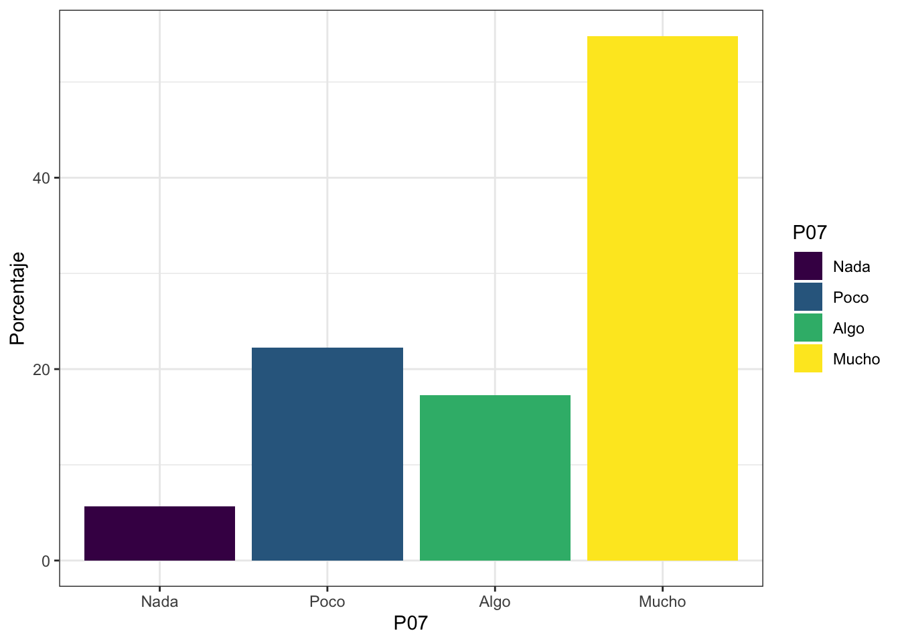
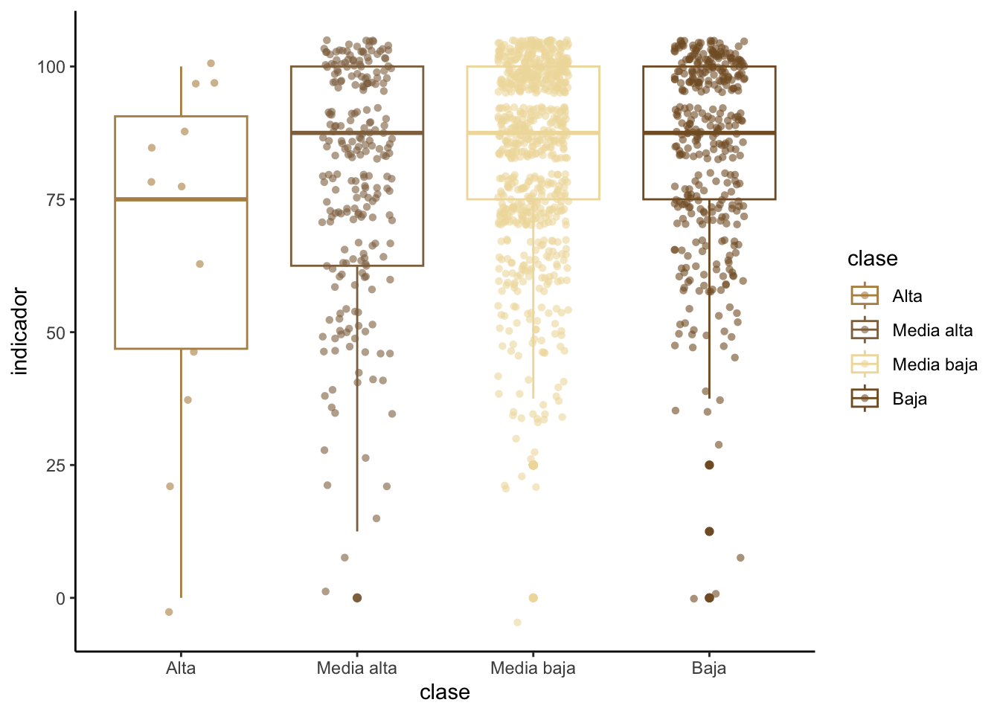

Práctica dirigida 2

FACULTAD DE CIENCIAS SOCIALES - PUCP
Curso: POL 278 - Estadística para el análisis político 1 | Semestre
2024 - 1
1.¿Qué es el análisis descriptivo?

2.Nivel de medida de una variable

3.Importancia de visualización de datos
Debido al crecimiento de la big data en los últimos años surgieron nuevas necesidades para comprender los análisis masivos de datos de una forma simple y escalable. Es entonces cuando se dirige la atención a desarrollar nuevas técnicas gráficas en distintas plataformas (ejemplos a continuación), tanto softwares como librerías de código abierto1, tal es el caso de ggplot2 en R.

Este interés por desarrollar técnicas de análisis masivo de datos y la comunicación de resultados cada vez más amigables y apta para todos los públicos dio pie a nuevas especialidades dentro de la ciencia de datos, como por ejemplo el data story telling

Gráficos por tipo de variables:

4.Análisis descriptivo
¬øCuál es la percepci√≥n de desigualdad en el Perú el 2022? ü§î
Para dar respuesta a la pregunta de investigación que guiara la práctica dirigida analizaremos algunas de las variables que forman parte de la Encuesta Nacional de Percepción de Desigualdades - ENADES 2022, que fue elaborada por Instituto de Estudios Peruanos (IEP) y Oxfam. La encuesta busca ahondar en la percepción de las diferentes formas de desigualdad en el Perú e incorpora indicadores que permiten medir la magnitud de brechas sociales y políticas como género, clase, entre otros.

library(rio) #Convocamos el paquete
data=import("Enades_2022_final.xlsx")
str(data)## 'data.frame': 1353 obs. of 12 variables:
## $ edad : num 49 60 32 64 19 41 23 19 20 23 ...
## $ sexo : num 1 1 2 1 1 1 2 1 1 2 ...
## $ zona1 : num 1 1 2 4 2 3 2 5 5 1 ...
## $ p03_1 : num 5 3 5 10 10 2 1 8 10 1 ...
## $ p04 : num 3 1 1 3 1 1 1 2 2 1 ...
## $ p05 : num 3 1 1 1 1 1 1 1 3 1 ...
## $ clase : num 2 2 3 2 2 2 4 3 2 4 ...
## $ d_educ : num 2 2 3 2 3 2 3 3 2 3 ...
## $ d_salud : num 3 3 3 2 3 3 2 3 2 3 ...
## $ d_trabajo : num 2 3 3 2 3 3 2 3 2 3 ...
## $ d_justicia: num 3 3 3 2 3 3 2 2 1 3 ...
## $ p13 : num 1 2 1 2 1 2 1 2 1 1 ...names(data) #revisamos las variables## [1] "edad" "sexo" "zona1" "p03_1" "p04"
## [6] "p05" "clase" "d_educ" "d_salud" "d_trabajo"
## [11] "d_justicia" "p13"4.1 ¿Cuál es el porcentaje de percepción de desigualdad económica en el Perú?
Usaremos la variable P04:
¿Qué tan desigual cree que es el Perú económicamente?
De acuerdo al diccionario de datos encontramos cuatro posibles respuestas
1:Mucho
2:Algo
3:Poco
4:Nada
Análisis de una variable ordinal
Pasos para analizar una variable ordinal A. Identificar el tipo de variable (str, class) B. Convertimos la variable al tipo de dato que necesitamos dependiendo el caso C. Elaboramos un objeto que nos permita ver preliminarmente los datos de la variable. D. Elaboramos un gráfico que vaya acorde a la variable ordinal (gráfico de barras)
library(dplyr) #Convocamos el paquete#comprobamos el tipo de dato que analizaremos
class(data$p04)## [1] "numeric"Del diccionario de datos, sabemos que esta variable es ordinal, revisemos si los niveles tienen coherencia con las respuestas recogidas en la encuesta.
data %>%
group_by(p04) %>%
summarise(Freq=n()) #Veamos los niveles de la variable## # A tibble: 4 × 2
## p04 Freq
## <dbl> <int>
## 1 1 794
## 2 2 242
## 3 3 244
## 4 4 73üí• Otorguemosle etiquetas y categoricemosla como factor:
data = data %>%
mutate(p04 = factor(p04, levels = 1:4, labels = c("Mucho", "Algo", "Poco", "Nada"), ordered = TRUE))Revisemos que el cambio se haya realizado correctamente usando el
comando summarise del paquete dplyr
data %>%
group_by(p04) %>%
summarise(Freq=n())## # A tibble: 4 × 2
## p04 Freq
## <ord> <int>
## 1 Mucho 794
## 2 Algo 242
## 3 Poco 244
## 4 Nada 73A primera vista, la tabla nos indica que la mayoría de los encuestados (794) opina que hay mucha desigualdad económica en el país. Pero, ¿cuánto sería dicho resultado en porcentaje?
Podemos realizar una tabla de frecuencias y porcentajes agregando una
linea al comando anterior. Asimismo, para poder graficar los resultados
de las tablas, tendremos que almacenarlas en un objeto. Trabajemos con
esta tabla resumen y asignemosle el nombre
para_grafico para posteriormente llamarla al
graficar.
para_grafico=data %>%
group_by(p04) %>%
summarize(Freq=n()) %>%
mutate(Porcentaje = (Freq / sum(Freq))*100)
para_grafico## # A tibble: 4 × 3
## p04 Freq Porcentaje
## <ord> <int> <dbl>
## 1 Mucho 794 58.7
## 2 Algo 242 17.9
## 3 Poco 244 18.0
## 4 Nada 73 5.40Afirmamos que más del 50% de los encuestados percibe que el país es muy desigual económicamente.
También podemos analizar cómo cambia esto si solo seleccionamos los casos de los encuestados/as menores de 30 años.
data %>%
filter(edad<30)%>%
group_by(p04) %>%
summarize(Freq=n()) %>%
mutate(Porcentaje = (Freq / sum(Freq))*100)## # A tibble: 4 × 3
## p04 Freq Porcentaje
## <ord> <int> <dbl>
## 1 Mucho 261 61.6
## 2 Algo 91 21.5
## 3 Poco 65 15.3
## 4 Nada 7 1.65Grafiquemos los resultados con ggplot2
Nuestra variable es categórica, por lo tanto realizaremos el gráfico acorde:
library(ggplot2)
ggplot(para_grafico, aes(x=p04, y=Porcentaje, fill=p04)) +
geom_bar(stat = "identity") 
Este es un gráfico básico, pero podemos personalizarlo2 según nuestros gustos.
library(tayloRswift) #opcional (una ventaja de que R sea software libre)
ggplot(para_grafico, aes(x=p04, y=Porcentaje, fill=p04)) +
geom_bar(stat = "identity") +
ggtitle("Percepción de desigualdad económica") +
xlab("¿Qué tan desigual cree que es el Perú económicamente") + ylab("Porcentaje")+
geom_text(aes(label=round(Porcentaje,1)), vjust=1.30, color="black", size=3)+
theme(panel.background=element_rect(fill = "white", colour = "white")) +
scale_fill_taylor(palette = "Red") #fearless, speakNow, Red
El ejercicio de análisis descriptivo con variables numéricas lo realizaremos con un indicador aditivo que crearemos a continuación.
4.2 ¿Cuál es la percepción de la desigualdad en calidad de vida en el Perú?
Indicador Proxy
TambieÃÅn llamado indicador indirecto, se usa ante la imposibilidad de medir lo que efectivamente es de importancia. El indicador mide una variable distinta a la que nos interesa de manera especiÃÅfica, pero presenta una relacioÃÅn lo maÃÅs directa posible con el fenoÃÅmeno en estudio.
Un indicador proxy es una medición o señal indirecto que aproxima o representa un fenómeno en la ausencia de una medición o señal directo.
Indicador Aditivo
Pasos para construir un indicador:
- Verificar que las variables que construyan el indicador correspondan al concepto que se desea medir. Ejemplo: Si deseo mejor Satisfacción del Usuario, las preguntas deben ser sobre ello.
- Revisar el cuestionario e identificar el sentido de las categorías. Ejemplo: El valor 5 es “Muy instafisfecho” y 1 “Muy satisfecho”
- Si las categorías de las variables están en el correcto sentido proceder a sumarlas, si no lo están, proceder a recodificarlas para luego sumar.
- Una vez realizada la suma, identificar el mínimo y el máximo.
- Aplicar la función rescale con el rango específico.
Construiremos un indicador aditivos de percepción de desigualdad en
calidad de vida en el Perú, que vaya del 0 al 100. Para ello usaremos a
las variables d_educ, d_salud,
d_trabajo y d_justicia.

El indicador que queremos crear es de percepción de desigualdad, por tanto mayor valor debería significar mayor desigualdad.
üó®Ô∏è Para poder crear el indicador, necesitamos que todas las variables a usar sean num√©ricas porque las tendremos que sumar. Entonces, primero verificamos el tipo de dato de cada variable.
str(data)## 'data.frame': 1353 obs. of 12 variables:
## $ edad : num 49 60 32 64 19 41 23 19 20 23 ...
## $ sexo : num 1 1 2 1 1 1 2 1 1 2 ...
## $ zona1 : num 1 1 2 4 2 3 2 5 5 1 ...
## $ p03_1 : num 5 3 5 10 10 2 1 8 10 1 ...
## $ p04 : Ord.factor w/ 4 levels "Mucho"<"Algo"<..: 3 1 1 3 1 1 1 2 2 1 ...
## $ p05 : num 3 1 1 1 1 1 1 1 3 1 ...
## $ clase : num 2 2 3 2 2 2 4 3 2 4 ...
## $ d_educ : num 2 2 3 2 3 2 3 3 2 3 ...
## $ d_salud : num 3 3 3 2 3 3 2 3 2 3 ...
## $ d_trabajo : num 2 3 3 2 3 3 2 3 2 3 ...
## $ d_justicia: num 3 3 3 2 3 3 2 2 1 3 ...
## $ p13 : num 1 2 1 2 1 2 1 2 1 1 ...data=data %>%
mutate(suma = d_educ + d_salud + d_trabajo + d_justicia)Revisamos mínimo y máximo
summary(data$suma)## Min. 1st Qu. Median Mean 3rd Qu. Max.
## 4.00 10.00 11.00 10.64 12.00 12.00Creamos el indicador de 0 al 100
library(scales)
data = data %>%
mutate(indicador = rescale(suma, to = c(0, 100)))summary(data$indicador)## Min. 1st Qu. Median Mean 3rd Qu. Max.
## 0.00 75.00 87.50 83.02 100.00 100.004.3 ¿Cuál es la diferencia de la percepción de desigualdad entre mujeres y hombres?
Ahora, veamos algunas medidas de tendencia central, distribución y
dispersión para el caso de variables numéricas. Trabajaremos con el
indicador que acabamos de crear: indicador
Exploremos la variable. Veamos medidas de tendencia central y de dispersión. Recordemos que va del 0 al 100.
data%>%
summarise(Media = mean(indicador),
Mediana = median(indicador),
Desviacion = sd(indicador),
Minimo = min(indicador),
Maximo = max(indicador))## Media Mediana Desviacion Minimo Maximo
## 1 83.01922 87.5 18.64847 0 100Podemos analizar la respuesta según el sexo de los encuestados
data = data %>%
mutate(sexo = factor(sexo, levels = 1:2, labels = c("Hombre","Mujer")))data %>%
group_by(sexo) %>%
summarise(Media=mean(indicador)) ## # A tibble: 2 × 2
## sexo Media
## <fct> <dbl>
## 1 Hombre 82.7
## 2 Mujer 83.3La tabla nos indica que las encuestadas mujeres perciben ligeramente una mayor desigualdad en los derechos y servicios, a comparación de los hombres.
Podemos visualizarlo mejor con un gráfico
ggplot(data, aes(x=sexo, y=indicador, color=sexo)) +
geom_boxplot() +
geom_jitter(shape=16, position=position_jitter(0.2),alpha=0.4) +#para agregar los casos como puntos
theme_classic()
➡️ Análisis: Como podemos ver en el gráfico la disperción de los datos es muy similar en el grupo de hombre y mujeres. Los valores atípicos (outliers) se muestran como puntos individuales fuera de la caja. La línea que vemos dentro de la caja nos señala la mediana, al comparar las dos líneas se aprecia que la mediana es similar.
En resumen, el boxplot es herramienta gráfica que
proporciona un resumen visual de la distribución de un conjunto de
datos, mostrando la mediana, los cuartiles, los valores atípicos y la
variabilidad de los datos.
data %>%
group_by(clase) %>%
summarise(Freq=n())## # A tibble: 4 × 2
## clase Freq
## <dbl> <int>
## 1 1 12
## 2 2 237
## 3 3 742
## 4 4 3624.4 ¿Cuál es la diferencia de la percepción de desigualdad entre clases?
data = data %>%
mutate(clase = factor(clase, levels = 1:4, labels = c("Alta", "Media alta", "Media baja", "Baja"), ordered = TRUE))data%>%
group_by(clase) %>%
summarise(Media = mean(indicador),
Mediana = median(indicador),
Desviacion = sd(indicador),
Minimo = min(indicador),
Maximo = max(indicador))## # A tibble: 4 × 6
## clase Media Mediana Desviacion Minimo Maximo
## <ord> <dbl> <dbl> <dbl> <dbl> <dbl>
## 1 Alta 66.7 75 32.6 0 100
## 2 Media alta 79.0 87.5 21.1 0 100
## 3 Media baja 83.9 87.5 17.6 0 100
## 4 Baja 84.4 87.5 17.9 0 100ggplot(data, aes(x=clase, y=indicador, color=clase)) +
geom_boxplot() +
geom_jitter(shape=16, position=position_jitter(0.2),alpha=0.6) +#para agregar los casos como puntos
scale_color_taylor(palette ="fearless") +
theme_classic()
➡️ Análisis: En el segundo gráfico la dispersión de los datos es muy similar en el grupo de clase social Media baja y Baja. Por otro lado, en el grupo de la clase Alta, se aprecia que la dispersión es mucho mayor (la caja es mucho más grande). Los outliers se muestran como puntos individuales más allá del bigote de la caja, los puntos más alejados se encuentran en el grupo de clase Baja.
Ejercicio en clase: Brinde tres observaciones más sobre el gráfico anterior.
Ejercicio para casa: Analice descriptivos y elabore el gráfico correspondiente para la variable p03_1